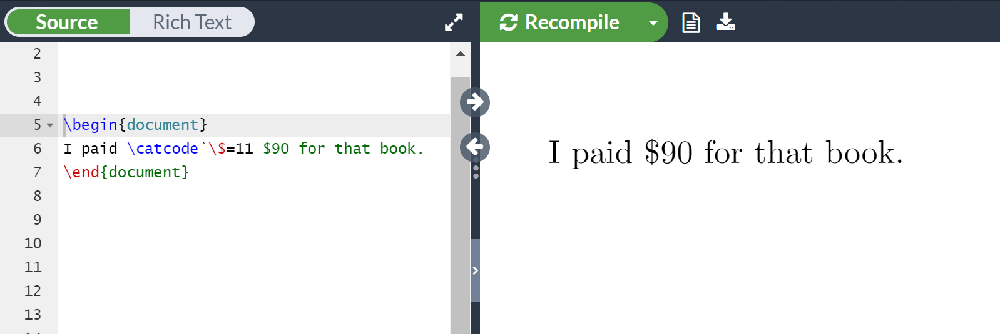

How TeX macros actually work: Part 6
Introduction and overview: The story so far
Over the previous 5 parts of this series we have seen:
- how TeX reads the characters within an input file and uses category codes to recognize different “classes” of character and subsequently convert them to character tokens and command tokens;
- that a macro is, in effect, comprised of four sections:
<TeX macro primitive>= one of\def,\edef,\gdefor\xdef;<macro name>=the name of your macro, such as\foo;<parameter text>can be “null” (not present) or it can be an string of delimiter tokens and macro parameter tokens;<replacement text>is the actual body of your macro: the section that is “executed” (expanded) when you call the macro.- how the
<parameter text>section can contain a wide range of tokens and that TeX uses this section as a “token template” to match a macro call to its original definition and work out the arguments used with the macro—and how TeX expects your use of a macro to match its original definition; - that, inside TeX, a macro definition is stored as continuous sequence of tokens representing the
<parameter text>and<replacement text>sections.
<TeX macro primitive><macro name><parameter text>{<replacement text>}
where:
When you use a macro command TeX will first check to see if it takes any parameters. If so, TeX then has to identify the actual arguments being used in your macro call. TeX has to test your macro call against the “token template” definition it has stored in memory. Specifically, TeX uses its internal (stored) definition of your macro’s <parameter text> section as the template through which it can pick out tokens that are the actual arguments, and which tokens are just there to act as delimiters.
The meaning of macro expansion
We are now, finally, ready to move on to the most important topic: how TeX processes macro arguments and actually executes the macro: a process TeX refers to as macro expansion.
But first, a short example: something odd?
To “set the scene” for explaining the mechanism by which TeX processes macros and their arguments, we’ll use a short example to indicate the issues we need to consider.
Arguments are first converted to tokens
The following example is based on one discussed in pages 114–5 of The Advanced TeXbook written by David Salomon. It is chosen because it nicely encapsulates the central ideas within a very short TeX macro.
During normal TeX/LaTeX operations, the $ sign has category code 3 (“math shift”) which switches TeX in/out of inline math mode ($...$) or display math mode ($$...$$)—of course, LaTeX uses \(..\) and \[..\] for the same purposes.
Suppose we want a macro that changes the category code of a $ sign to, say, 11 so that we can typeset it like any regular character. We can use the TeX primitive command \catcode and our first attempt at such a macro, \docat, might be
\def\docat #1{\catcode`\$=11 #1}
However, when we try to use it, like this
\begin{document}
\def\docat #1{\catcode`\$=11 #1}
I paid \docat{$90} for that book.
\end{document}
we expect TeX to typeset I paid $90 for that book. but it fails with an error message:
! Missing $ inserted.
<inserted text>
$
<to be read again>
\par
l.7
From the error it seems that the $ used in our macro’s argument is still triggering TeX to typeset maths; clearly, TeX did not change the category code of the $ used in our macro’s argument ($90). The question is why didn’t TeX change the category code of $ to 11 and typeset it as a regular character? The short answer is that TeX first converts macro arguments to tokens before it feeds them into the token list of the <replacement text>—but we’ll look at the underlying mechanisms in much more detail.
What we need to remember is that our notion of TeX using text/characters is only relevant to the content of the file that TeX is reading: as soon as TeX has read-in any characters we are in the world of tokens. TeX macro calls work with tokens, not the actual written/text representation of TeX/LaTeX commands—this will become clearer as we work through the example.
Initially, we might think that our use of the \docat macro in I paid \docat{$90} for that book. is the same as directly writing the equivalent TeX (or LaTeX) code—such as the following, which does work:
\begin{document}
I paid \catcode`\$=11 $90 for that book.
\end{document}

However, as we saw above, the way that TeX processes macro arguments produces a result (! Missing $ inserted.) that is quite different to writing out the TeX code: we’ll now explore why that happens.
Macros and arguments as token lists
To fully understand the behaviour of the \docat macro, and its argument ($90), and why it fails, we again need to visualize the definition of the \docat macro and any arguments used (when \docat is called) as lists of tokens, not as a sequence of characters.
As TeX scans your input text, it would recognize \docat as a macro command; after that it checks to see if it takes any parameters—how TeX does that is explained in the following section for readers interested in the finer details.
For those who like the details...
After the macro is called, TeX checks to see if the very first token (in the macro’s stored definition token list) is the end match token: if so, TeX can be certain that the macro does not take any parameters.
An example
The following node-list diagrams compare the token lists for two macros:
\def\foo A#1B{#1}: this has<parameter text>ofA#1B, consequently the end match token is not the first token so TeX would proceed to look for parameters;\def\foo{X}: this does not have a<parameter text>section, consequently the end match token is the first one in the token list and TeX knows not to look for any parameters.

Toward the “Grand Finale”: expansion
Let’s remind ourselves of the question: why didn’t the following macro work; i.e., why doesn’t TeX change the category code of any $ signs used in the argument of the \docat macro, such as \docat{$90}?
\begin{document}
\def\docat #1{\catcode`\$=11 #1}
I paid \docat{$90} for that book.
\end{document}
As explained above, when TeX scans your input and recognizes a macro command—at a time when TeX is going to execute it—TeX first checks to see if that macro takes any parameters. If so, TeX will need to further scan the input file to identify the actual arguments the user has provided for this specific macro call: TeX has to do this before it can call the actual macro code. Clearly, TeX needs to determine the data that the user wants to provide to the macro.
To identify the arguments present in the input (the user’s macro call), TeX will be guided by the internally stored definition of that macro: specifically, the <parameter text> section of the stored macro definition (token list)—that provides a sort of “token template”. Using that “token template” TeX has to determine which tokens in the user’s macro call are just delimiters (essentially “punctuation”) and which tokens form part of an argument. It is when TeX encounters a match parameter token in the stored macro definition <parameter text> section (“token template”) that it knows to start forming a list of tokens for that particular argument.
As soon as TeX recognizes the need to identify the user’s argument, TeX will scan the input to generate tokens and very carefully check them, token-by-token, against the stored macro definition. TeX carries on gathering tokens for an argument until it detects a token that is actually a delimiter, or if it detects the end match token: in either case, TeX then knows it is time to stop looking for tokens that form part of that argument.
Why the \docat macro failed
As noted, before TeX can actually call a macro it has to identify and prepare any arguments that are to be used with that macro. However, to identify the argument(s), ready for feeding into the macro, TeX has to generate each argument as a list of tokens: and that’s the reason for \docat’s failure.
In our example, we provided \docat with an argument of $90 but that argument is first converted to a list of tokens as TeX scans the macro call—the argument is converted to tokens before the macro is actually called. Here, for the argument $90, TeX will generate three character tokens: one token for each of $, 9 and 0.
The following graphic shows the token list generated for the argument $90, prior to being fed into the body of the \docat macro:

In the above graphic we can clearly see that the argument token list contains the $ as a character token based on a category code of 3.
As we saw in Parts 1 to 3, character tokens are created using the category code values in operation at the time the character is read-in—i.e., at the time the argument’s token list is created (turned into tokens). At the time the arguments are being tokenized, the \docat macro has not yet been executed so the category-code change we put in the macro call (\catcode`\$=11) does not affect the category codes being used to generate the argument’s tokens.
Once TeX has generated a token list representing the argument of $90, those three character tokens are fed into the actual macro <replacement text>. However, that results in the $ being fed-in as a character token created using category code 3: “math on” and we’ve seen that once a character token is formed, the attached category code is permanent. The $ is not fed into the macro as a character, but as a character token based on the $ having category code 3.
Running \docat: macro expansion
TeX refers to the process of “executing” a macro as macro expansion; a term which, in this author’s opinion, is a little confusing but it’s the accepted terminology so we’ll continue to use it.
The real meaning of macro expansion
After TeX detects the \docat command in the user’s input, it scans the arguments and generates a token list for its argument($90). To execute (expand) the macro, TeX switches its gaze away from the user’s input file and starts to read the tokens contained \docat’s <replacement text> token list stored in TeX’s memory.
As TeX processes \docat’s definition it will then see, and execute, the series of tokens originally used to define the macro (catcode,
`, \$, =, 1, 1, #1).
The following graphic shows the process of expanding the \docat macro: TeX stops getting tokens from the input file and starts to read tokens from the <replacement text> section of the \docat macro definition stored in memory. TeX proceeds to execute these pre-prepared tokens until it sees an output parameter token which instructs TeX to read (“inject”) and “execute” the argument tokens at this point. In our example, that is three character tokens representing $90 and that results in an error because the pre-prepared character token for $ has category code 3. Because we are dealing with character tokens, not characters, the $ is unaffected by the previous category code change caused by the tokens in \catcode`\$=11.

After TeX has processed the tokens representing \catcode`\$=11, the category code change for $ will now be in effect. TeX then encounters the “special token” called output parameter that tells TeX to insert the token list for the argument. However, that token list is three character tokens, the first of which is a token for a $ with a category code 3 (“math on”) assigned to it: the previous category code change within the macro cannot affect this character token so TeX treats that token as a signal to begin math processing which causes the macro to fail.
Can the \docat macro be fixed?
From the discussions above, it is clear that any characters appearing in macro arguments are tokenized using the category codes in operation at the time that tokenization takes place—which, in our example, is always before the
<replacement text> of the \docat macro is actually executed. So, how can we ensure that a macro’s arguments have their category codes changed?
One way is to modify \docat to be a parameterless macro which only makes the category code change—it does not have any arguments to tokenize. We then use a second macro, \getarg, which takes a single parameter, and arrange for that macro to have its argument tokenized when the appropriate category code for $ is operational.
\begin{document}
\def\docat{\catcode`\$=11 \getarg} % No parameters, calls a second macro \getarg
\def\getarg#1{#1} %1 parameter whose argument will be tokenized
Now you can run it like this and it will work:
I paid \docat{$90} for that book.
\end{document}
When we use our new version of \docat (like this \docat{$90}) it appears as if the $90 is still being used as an argument for the \docat macro. However, as discussed above, when TeX detects \docat in the input it checks to see if it has any arguments: now it doesn’t, so TeX proceeds to execute (expand) it. The expansion of \docat is the sequence of tokens catcode, `, \$, =,
1,
1,
space,
getarg
and this takes place before TeX starts to read (tokenize) the next characters contained in the input file—i.e., the group {$90}. Remember that when TeX expands a macro it gets its next input by reading the tokens contained in the token list of that macro’s definition; i.e., from its <replacement text> section stored in memory.
TeX will process, and execute, the expansion of \docat and detect the token
getarg, recognizing it as a token which represents a command that takes parameters. At this point, TeX will scan the input file for getarg’s argument: the characters: {$90}. As usual, these are tokenized but because TeX has read and processed the expansion of \docat, the characters $90 are tokenized when the category code of $ has been changed to 11. The definition (<replacement text>) of \getarg is simply #1 which means typeset the argument supplied, and that is what happens, resulting in a $ with category code 11 being generated and safely typeset.
Concluding remarks: the story in nodes
The sequence of events arising from re-writing \docat to use the macro \getarg is contained in the following annotated node-list diagram which shows the expansion process for the macro \docat. Readers wishing to carefully study this diagram can download the graphic as a PDF or SVG file for offline use.

Overleaf guides
- Creating a document in Overleaf
- Uploading a project
- Copying a project
- Creating a project from a template
- Using the Overleaf project menu
- Including images in Overleaf
- Exporting your work from Overleaf
- Working offline in Overleaf
- Using Track Changes in Overleaf
- Using bibliographies in Overleaf
- Sharing your work with others
- Using the History feature
- Debugging Compilation timeout errors
- How-to guides
- Guide to Overleaf’s premium features
LaTeX Basics
- Creating your first LaTeX document
- Choosing a LaTeX Compiler
- Paragraphs and new lines
- Bold, italics and underlining
- Lists
- Errors
Mathematics
- Mathematical expressions
- Subscripts and superscripts
- Brackets and Parentheses
- Matrices
- Fractions and Binomials
- Aligning equations
- Operators
- Spacing in math mode
- Integrals, sums and limits
- Display style in math mode
- List of Greek letters and math symbols
- Mathematical fonts
- Using the Symbol Palette in Overleaf
Figures and tables
- Inserting Images
- Tables
- Positioning Images and Tables
- Lists of Tables and Figures
- Drawing Diagrams Directly in LaTeX
- TikZ package
References and Citations
- Bibliography management with bibtex
- Bibliography management with natbib
- Bibliography management with biblatex
- Bibtex bibliography styles
- Natbib bibliography styles
- Natbib citation styles
- Biblatex bibliography styles
- Biblatex citation styles
Languages
- Multilingual typesetting on Overleaf using polyglossia and fontspec
- Multilingual typesetting on Overleaf using babel and fontspec
- International language support
- Quotations and quotation marks
- Arabic
- Chinese
- French
- German
- Greek
- Italian
- Japanese
- Korean
- Portuguese
- Russian
- Spanish
Document structure
- Sections and chapters
- Table of contents
- Cross referencing sections, equations and floats
- Indices
- Glossaries
- Nomenclatures
- Management in a large project
- Multi-file LaTeX projects
- Hyperlinks
Formatting
- Lengths in LaTeX
- Headers and footers
- Page numbering
- Paragraph formatting
- Line breaks and blank spaces
- Text alignment
- Page size and margins
- Single sided and double sided documents
- Multiple columns
- Counters
- Code listing
- Code Highlighting with minted
- Using colours in LaTeX
- Footnotes
- Margin notes
Fonts
Presentations
Commands
Field specific
- Theorems and proofs
- Chemistry formulae
- Feynman diagrams
- Molecular orbital diagrams
- Chess notation
- Knitting patterns
- CircuiTikz package
- Pgfplots package
- Typesetting exams in LaTeX
- Knitr
- Attribute Value Matrices
Class files
- Understanding packages and class files
- List of packages and class files
- Writing your own package
- Writing your own class